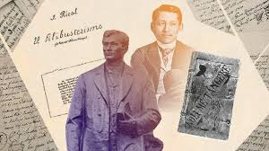

Jose Rizal, born on June 19, 1861, in Calamba, Philippines, was a polymath, writer, and nationalist who played a pivotal role in the Philippine Revolution against Spanish colonial rule. His early education was greatly influenced by his mother, Teodora Alonso, and he later pursued higher education in Europe, specializing in medicine and ophthalmology.
Rizal's legacy is profound and multifaceted. He is revered as a national hero in the Philippines for his contributions to the country's struggle for independence and his profound impact on Philippine society and culture. His writings, particularly his novels "Noli Me Tangere" and "El Filibusterismo," exposed the injustices of Spanish colonialism and inspired nationalist sentiments among Filipinos.
Rizal's legacy is profound and multifaceted. He is revered as a national hero in the Philippines for his contributions to the country's struggle for independence and his profound impact on Philippine society and culture. His writings, particularly his novels "Noli Me Tangere" and "El Filibusterismo," exposed the injustices of Spanish colonialism and inspired nationalist sentiments among Filipinos.

Rizal's legacy extends beyond his literary works. He emphasized the importance of education, intellectual enlightenment, and peaceful reform as means to uplift society. His ideals of nationalism, patriotism, and social justice continue to resonate in Philippine society and beyond, inspiring movements for freedom, equality, and human rights worldwide.